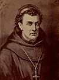

Wikipedia
The Free Encyclopedia
Welcome to Wikipedia
the free encyclopedia that anyone can edit.
5,484,953 articles in English
- Arts
- Biography
- Geography
- History
- Mathematics
- Science
- Society
- Technology
- All portals
From today's featured article

Michael Francis Egan (September 29, 1761 – July 22, 1814) was a prelate of the Roman Catholic Church. Born in Ireland, he joined the Franciscan Order at a young age. He was ordained a priest, probably in Prague, in 1785 or 1786. He advanced rapidly to positions of responsibility in the Franciscan order, becoming custos (guardian) in the province of Munster in Ireland, then at the Pontifical College at the home of Irish Franciscans in Rome, and later at Ennis in Ireland. Egan arrived in the United States in January 1802 to serve as an assistant pastor near Lancaster, Pennsylvania. His reputation as a gifted preacher secured him a position in 1803 as a pastor at St. Mary's Church in Philadelphia. In 1808, he was appointed the first Bishop of Philadelphia, holding that position until his death in 1814. His tenure as bishop saw the construction of new churches and the expansion of the Catholic Church membership in his diocese, but much of his time was consumed by disputes with the lay trustees of St. Mary's Church. (Full article...)
Recently featured: Gods' Man Spotted green pigeon St Botolph's Church, Quarrington
Archive
By email
More featured articles
In the news

German Chancellor Angela Merkel
- In Saudi Arabia, a decree by King Salman effectively removes a longstanding ban on women driving in the country.
- Iraqi Kurdistan votes in favour of independence, though the vote is dismissed as unconstitutional by the Iraqi federal government.
- The CDU/CSU, led by Angela Merkel (pictured), wins the most seats in the German federal election.
- The National Party, led by Bill English, wins the most seats in the New Zealand general election.
- A magnitude 7.1 earthquake strikes central Mexico, killing more than three hundred people.
Ongoing: Northern Rakhine State clashes
Recent deaths: Hugh Hefner, Elizabeth Dawn Tony, Booth Liliane, Bettencourt
Did you know...
Goliath imperial pigeon
- ... that the goliath imperial pigeon (pictured) is also known as the notou?
- ... that William Tassie thought parents would send their children to private schools if other schools did not provide the opportunity to learn Latin at an early age?
- ... that the proposed Stop Enabling Sex Traffickers Act has been criticized for weakening Section 230 safe harbors?
- ... that the future of clinafloxacin as a new drug is less bright due to its risk of drug-induced light sensitivity?
- ... that 15 policemen were killed in a 2015 ambush in Jalisco, Mexico?
- ... that after baritone Johannes Martin Kränzle recovered from MDS, he made his debut at the Bayreuth Festival in 2017 as Beckmesser, staged by the festival's first Jewish director?
- ... that although the Smith's red rock hare is a nocturnal species, it occasionally comes out during early mornings or late afternoons in places where it is not hunted?
Recent additions Start a new article Nominate an article
On this day...

Avro Ansons, having landed after collision
September 29: Michaelmas; Day of Tasu'a (Islam, 2017)
- 1918 – World War I: At the Battle of St Quentin Canal, the British Fourth Army made the first breach of the German defensive Hindenburg Line.
- 1940 – Two Avro Ansons of No. 2 Service Flying Training School RAAF collided in mid-air over Brocklesby, New South Wales, Australia, remained locked together after colliding (pictured), and landed safely.
- 1957 – An explosion at the Soviet nuclear reprocessing plant Mayak released 74 to 1,850 PBq of radioactive material.
- 1962 – Alouette 1, Canada's first satellite, and the first satellite constructed by a country other than the Soviet Union or the United States, was launched.
- 1991 – The Haitian Army deposed President Jean-Bertrand Aristide, eight months after the nation's first democratic elections.
Horatio Nelson, 1st Viscount Nelson (b. 1758) · Guadalupe Victoria (b. 1786) · W. H. Auden (d. 1973)
More anniversaries: September 28 September 29 September 30
By email List of historical anniversaries
From today's featured list
Jeff Gordon
American racing driver Jeff Gordon won 93 NASCAR Cup Series races. He drove in the Cup Series full-time from 1993 to 2015. In 1992, Rick Hendrick watched Gordon race in a Busch Series event at Atlanta Motor Speedway, and Gordon joined Hendrick Motorsports two days later. During Gordon's career with Hendrick, he won his first race in 1994 at Charlotte Motor Speedway in the Coca-Cola 600, and later became a four-time Cup Series champion. He also won the Daytona 500 three times, in 1997, 1999, and 2005. As of 2017, he ranks third on the all-time Cup wins list with 93 career wins, the most in NASCAR's modern era (1972–present). Over the course of his racing career, Gordon won a total of 98 NASCAR races, including five races in the Busch Series. His final NASCAR victory came at Martinsville Speedway in 2015 in the Goody's Headache Relief Shot 500. (Full list...)
Recently featured: Academy Awards for Walt Disney Grade I listed buildings in North Somerset Grammy Award for Best Dance Recording
Archive More featured lists
Today's featured picture
Photograph: Tam McDonald
The ballistic missile submarine HMS Vanguard, lead ship of her class, arrives at HMNB Clyde in Faslane, Scotland, following a patrol. Ballistic missile submarines like Vanguard were introduced during the Cold War, and serve as the third leg of the nuclear triad in countries which also operate nuclear-armed land-based missiles and aircraft. Their intended role in the nuclear triad is to provide a second-strike capability in a defensive capacity, or to offer nuclear-armed nations a first-strike weapons platform. In addition to the first- and second-strike capabilities, Vanguard carries a handwritten letter from the Prime Minister of the United Kingdom which contains orders on what action to take in the event that an enemy nuclear strike has destroyed the British government.
Recently featured: Toledo, Spain Karang Bolong Beach (Nusa Kambangan) Elisha
Archive More featured pictures
Other areas of Wikipedia
- Community portal – Bulletin board, projects, resources and activities covering a wide range of Wikipedia areas.
- Help desk – Ask questions about using Wikipedia.
- Local embassy – For Wikipedia-related communication in languages other than English.
- Reference desk – Serving as virtual librarians, Wikipedia volunteers tackle your questions on a wide range of subjects.
- Site news – Announcements, updates, articles and press releases on Wikipedia and the Wikimedia Foundation.
- Village pump – For discussions about Wikipedia itself, including areas for technical issues and policies.
Wikipedia's sister projects
Wikipedia is hosted by the Wikimedia Foundation, a non-profit organization that also hosts a range of other projects:
 Commons
Commons
Free media repository
 Wikibooks
Wikibooks
Free textbooks and manuals
 Wikiquote
Wikiquote
Collection of quotations
 Wikiversity
Wikiversity
Free learning materials and activities
 MediaWiki
MediaWiki
Wiki software development
 Wikidata
Wikidata
Free knowledge base
 Wikisource
Wikisource
Free-content library
 Wikivoyag
Wikivoyag
Free travel guide
 Meta-Wiki
Meta-Wiki
Wikimedia project coordination
 Wikinews
Wikinews
Free-content news
 Wikispecies
Wikispecies
Directory of species
 Wiktionary
Wiktionary
Dictionary and thesaurus
Wikipedia languages
This Wikipedia is written in English. Started in 2001, it currently contains 5,484,953 articles. Many other Wikipedias are available; some of the largest are listed below.
- More than 1,000,000 articles: Deutsch Español Français Italiano Nederlands 日本語 Polski Русский Svenska Tiếng Việt
- More than 250,000 articles: العربية Bahasa Indonesia Bahasa Melayu Català Čeština Euskara فارسی 한국어 Magyar Norsk Português Română Srpski Srpskohrvatski Suomi Türkçe Українська 中文
- More than 50,000 articles: Bosanski Български Dansk Eesti Ελληνικά English (simple form) Esperanto Galego עברית Hrvatski Latviešu Lietuvių Norsk nynorsk Slovenčina Slovenščina ไทย
Complete list of Wikipedias
- Main page
- Contents
- Featured content
- Current events
- Random article
- Donate to Wikipedia
- Wikipedia store
- Interaction
- Help
- About Wikipedia
- Community portal
- Recent changes
- Contact page
- Tools
- What links here
- Related changes
- Upload file
- Special pages
- Permanent link
- Page information
- Wikidata item
- Print/export
- Create a book
- Download as PDF
- Printable version
- In other projects
- Wikimedia Commons
- MediaWiki
- Meta-Wiki
- Wikispecies
- Wikibooks
- Wikidata
- Wikinews
- Wikiquote
- Wikisource
- Wikiversity
- Wikivoyage
- Wiktionary
Text is available under the Creative Commons Attribution-ShareAlike License; additional terms may apply. By using this site, you agree to the Terms of Use and Privacy Policy. Wikipedia® is a registered trademark of the Wikimedia Foundation, Inc., a non-profit organization.